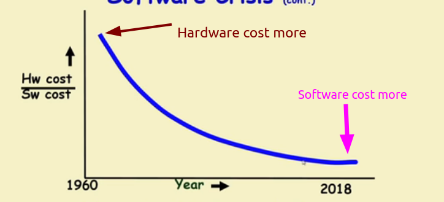
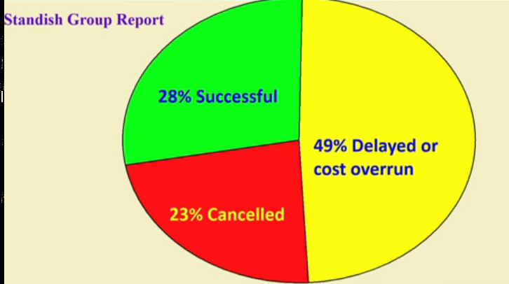

Soft. Eng.
Prof. Rajib Mall
Que: What is Software Engineering?
Ans : Engineering approach to develop software.
OR
Systematic collection of past experience
- Techniques
- Methodologies
- Guidelines
OR
IEEE Def
"Software engineering i sthe application of a systematic, disciplined, quantifiable approach to the development, operation, and maintenance of software; that is, the application of engineering to software."
Que : Why Software engineering important for Engineers?
Ans : Software Crisis
It is often the case that software products:
- fail to meet user requirements
- Expensive
- Difficult to alter, debug, and enhance.
- Often delivered late.
- Use resources non-optimally
~~~~~~~~~~~~~~~~~~~~~~~~~~~~~~~~~
With time we saw,

Que: If the price of hardware is less then why not have entirely hardware systems?
Ans : >A virtue of software:
- Relatively easy and faster to develop and to change
- Consumes no space, weight, or power
- Otherwise all might as well be hardware
>The more is the complexity of software, the harder it is to change-- why?
- Further, the more the changes made to a program, the greater becomes its complexity.
~~~~~~~~~~~~~~~~~~~~~~~~~~~~~~~~~
Let's see the project status report

~~~~~~~~~~~~~~~~~~~~~~~~~~~~~~~~~
Que: Which factors are contributing to the software Crisis?
Ans : Larger problems
Poor project management
Lack of adequate training in software engineering.
~~~~~~~~~~~~~~~~~~~~~~~~~~~~~~~~~